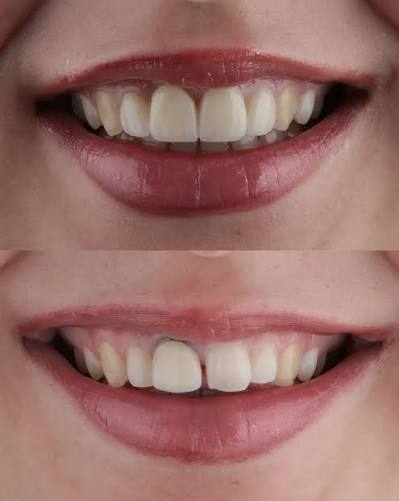
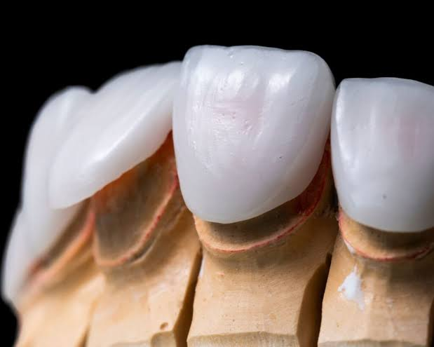

✨ Cam Seramik Restorasyon Çözümlerimiz


Cam seramik (Empress / IPS e.max) restorasyonlar, özellikle ön bölge estetiğinde ve Gülüş Tasarımı (Smile Design) uygulamalarında diş hekimliğinin ulaştığı en üst düzey sanatsal noktadır. Bu materyal, laboratuvarımızda bilgisayar kontrollü hassas kazıma sistemleri veya yüksek basınçlı laboratuvar presleme fırınları kullanılarak işlenir.
İçeriğindeki lityum disilikat kristalleri sayesinde cam seramikler, doğal diş minesinin floresan özelliğini, şeffaflık efektlerini ve derinlik algısını %100 oranında yakalayabilen tek malzemedir. Hekimlerimiz tarafından laminate veneer (yaprak porselen), tam kuron veya estetik dolgu (inley/onley) olarak planlanan bu restorasyonlar, Karaca Dental'in uzman seramistlerinin hassas fırınlama ve sanatsal renklendirme (glaze) süreçlerinden geçer. Diş etiyle kusursuz mekanik ve kimyasal bağlantı kurarak, sızdırmazlık sağlar ve ikincil çürük riskini tamamen ortadan kaldırır.
⬅ Ana Sayfaya Dön